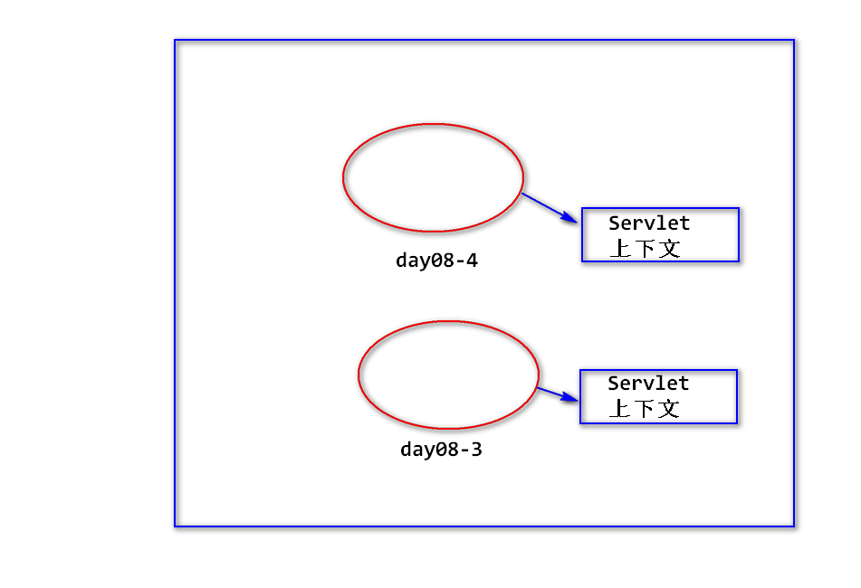
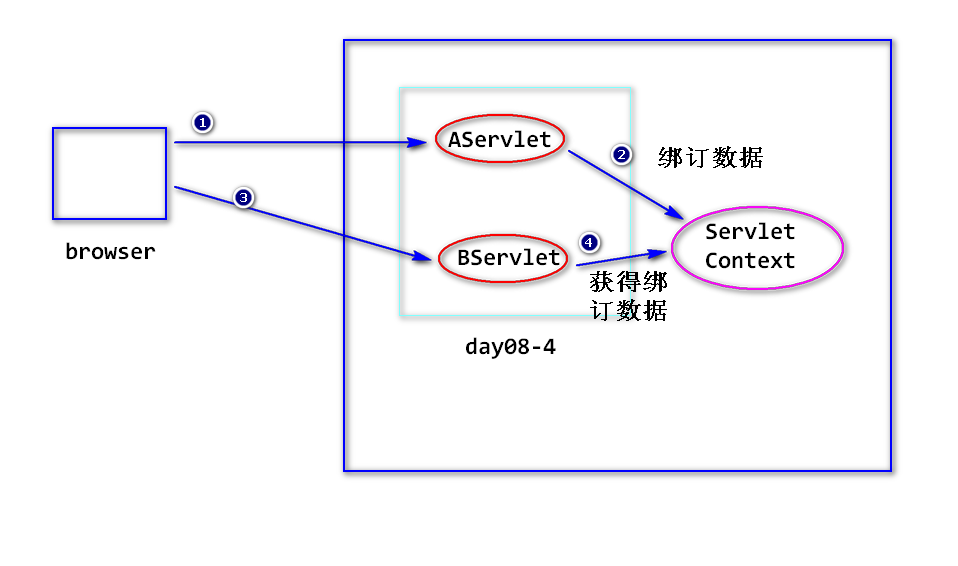
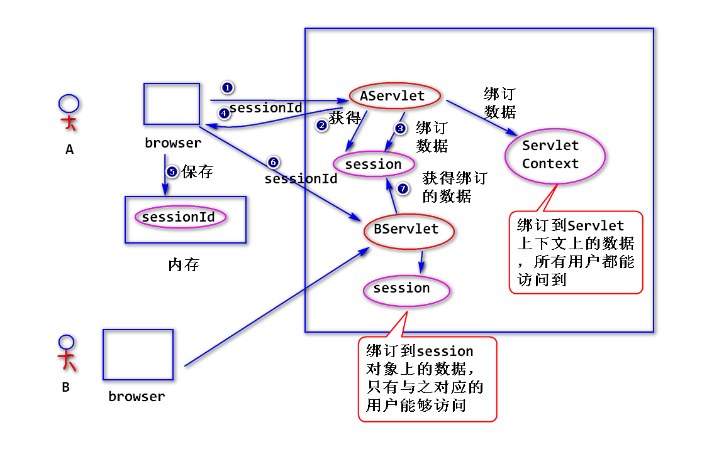

1.路径问题
(1)什么是路径问题?
<a href="addUser.jsp">
<form action="add">
response.sendRedirect("login.jsp")
request.getRequestDispatcher("listUsers.jsp")
(2)什么是相对路径?
不以”/“开头的路径
(3)什么是绝对路径?
以”/“开头的路径
(4)如何写绝对路径?
链接、表单提交、重定向从应用名开始写，转发从应用名之后开始写。
注：不要将应用名直接写在路径里面，而应该使用下面的方法
来获得实际部署时的应用名。
String request.getContextPath();
2.容器如何处理请求资源路径?
比如，在浏览器地址栏输入http://ip:port/day08-2/abc.html
step1.容器默认认为访问的是一个servlet。
容器将请求资源路径("/webapp/abc.html")中的应用名除掉，
得到"/abc.html"，然后查找web.xml配置文件，看<url-pattern>
有没有与之匹配的servlet。
匹配方式有三种:
第一种: 精确匹配
第二种: 通配符匹配,即使用"*"配置任意的零个或者多个字符，比如
<url-pattern>/*</url-pattern>
<url-pattern>/demo/*</url-pattern>
第三种：后缀匹配，使用"*."开头，后接任意的一个后缀，比如
<url-pattern>*.do</url-pattern>
以上配置，会匹配所有以".do"结尾的请求。
<url-pattern>*.action</url-pattern>
step2.如果找不到对应的servlet，容器会查找对应位置的文件。
找到了，就返回该文件的内容，找不到，返回404。
3.如何让一个servlet处理多种请求?
step1. 使用后缀匹配，比如
<servlet-mapping>
<servlet-name>someServlet</servlet-name>
<url-pattern>*.do</url-pattern>
</servlet-mapping>
step2. 分析请求资源路径，调用对应的分支来处理。
4.Servlet上下文
(1)什么是Servlet上下文?
容器启动之后，会为每一个web应用创建唯一的一个符合ServletContext
接口要求的对象，该对象一般称之为Servlet上下文。
特点:
唯一性：一个web应用对应一个Servlet上下文。
持久性: 只要容器没有关闭，应用没有被卸载，Servlet上下文
就会一直存在。

(2)如何获得Servlet上下文?
HttpSession,GenericServlet提供了getServletContext方法来获得
上下文。
注:
GenericServlet是HttpServlet的父类
(3)作用1: 绑订数据
request,session,Servlet上下文都提供了绑订数据相关的方法，
区别如下:
a.生存时间不一样，在满足使用条件的情况下，优先使用生命周期
短的(节省内存)。
request < session < servlet上下文

b.可访问的范围不一样。
